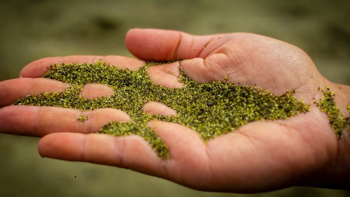

Green virtues of green sand
Revolution in gloss recycling could help keep water clean
A For the past 100 years special high grade white sand dug from the ground at Leighton Buzzard in the UK. has been used to filter tap water to remove bacteria and impurities but this may no longer be necessary. A new factory that turns used wine bottles into green sand could revolutionise the recycling industry and help to filter Britain’s drinking water. Backed by $1.6m from the European Union and the Department for Environment, Food and Rural Affairs (Defra), a company based in Scotland is building the factory, which will turn beverage bottles back into the sand from which they were made in the first place. The green sand has already been successfully tested by water companies and is being used in 50 swimming pools in Scotland to keep the water clean.
B The idea is not only to avoid using up an increasingly scarce natural resource, sand but also to solve a crisis in the recycling industry. Britain uses 5.5m tonnes of glass a year, but recycles only 750,000 tonnes of it. The problem is that half the green bottle glass in Britain is originally from imported wine and beer bottles. Because there is so much of it, and it is used less in domestic production than other types, green glass is worth only $25 a tonne. Clear glass, which is melted down and used for whisky bottles, mainly for export, is worth double that amount.
C Howard Drvden. a scientist and managing director of the company. Drvden Aqua, of Bonnyrigg, near Edinburgh, has spent six years working on the product he calls Active Filtration Media, or AFM. He concedes that he has given what is basically recycled glass a ‘fancy name' to remove the stigma of what most people would regard as an inferior product. He says he needs bottles that have already contained drinkable liquids to be sure that drinking water filtered through the AFM would not be contaminated. Crushed down beverage glass has fewer impurities than real sand and it performed better in trials. *The fact is that tests show that AFM does the job better than sand, it is easier to clean and reuse and has all sorts of properties that make it ideal for other applications.' he claimed.
D The factory is designed to produce 100 tonnes of AFM a day, although Mr Dryden regards this as a large-scale pilot project rather than full production. Current estimates of the UK market for this glass for filtering drinking water, sewage, industrial water, swimming pools and fish farming are between 175.000 to 217.000 tonnes a year, which w ill use up most of the glass available near the factory. So he intends to build five or six factories in cities where there are large quantities of bottles, in order to cut down on transport costs.
E The current factory will be completed this month and is expected to go into full production on January 14th next year. Once it is providing a ‘regular’ product, the government’s drinking water inspectorate will be asked to perform tests and approve it for widespread use by water companies. A Defra spokesman said it was hoped that AFM could meet approval within six months. The only problem that they could foresee was possible contamination if some glass came from sources other than beverage bottles.
F Among those who have tested the glass already is Caroline Fitzpatrick of the civil and environmental engineering department of University College London. ‘We have looked at a number of batches and it appears to do the job.' she said. ‘Basically, sand is made of glass and Mr Dryden is turning bottles back into sand. It seems a straightforward idea and there is no reason we can think of why it would not work. Since glass from wine bottles and other beverages has no impurities and clearly did not leach any substances into the contents of the bottles, there was no reason to believe there would be a problem,’ Dr Fitzpatrick added.
G Mr Dryden has set up a network of agents round the world to sell AFM. It is already in use in central America to filter water on banana plantations where the fruit has to he washed before being despatched to European markets. It is also in use in sewage works to filter water before it is returned to rivers, something which is becoming legally necessary across the European Union because of tighter regulations on sewage works. So there are a great number of applications involving cleaning up water. Currently, however, AFM costs $670 a tonne, about four times as much as good quality sand. ‘Hut that is because we haven't got large-scale production. Obviously, when we get going it will cost a lot less, and be competitive with sand in price as well.’ Mr Dryden said. ‘I believe it performs better and lasts longer than sand, so it is going to be better value too.'
H If AFM takes off as a product it will be a big boost for the government agency which is charged with finding a market for recycled products. Crushed glass is already being used in road surfacing and in making tiles and bricks. Similarly. AFM could prove to have a widespread use and give green glass a cash value.
Questions 1-10
Reading Passage 1 has 8 paragraphs labelled A-H Which paragraph contains the following information?
Write the correct letter A-H in boxes 1-10 on your answer sheet.
NB You may use any letter more than once.
1 a description of plans to expand production of AFM
2 the identification of a potential danger in the raw material for AFM
3 an example of AFM use in the export market
4 a comparison of the value of green glass and other types of glass
5 a list of potential applications of AFM in the domestic market
6 the conclusions drawn from laboratory checks on the process of AFM production
7 identification of current funding for the production of green sand
8 an explanation of the chosen brand name for crushed green glass
9 a description of plans for exporting AFM
10 a description of what has to happen before AFM is accepted for general use
Questions 11-14
Complete the summary below.
Choose NO MORE THAN TWO WORDS from the passage for each answer.
Write your answers in boxes 11-14 on your answer sheet.
Green sand
The use of crushed green glass (AFM) may have two significant impacts: it may help to save a diminishing 11 while at the same time solving a major problem for the 12 in the UK. However, according to Howard Dryden, only glass from bottles that have been used for 13 can be used in the production process. AFM is more effective than 14 as a water filter, and also has other uses.
---End of the Test---
Please Submit to view your score, solution and explanations.